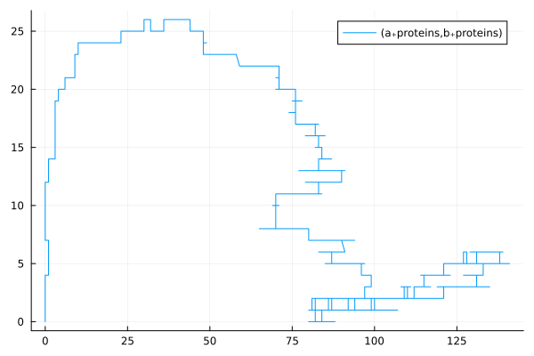
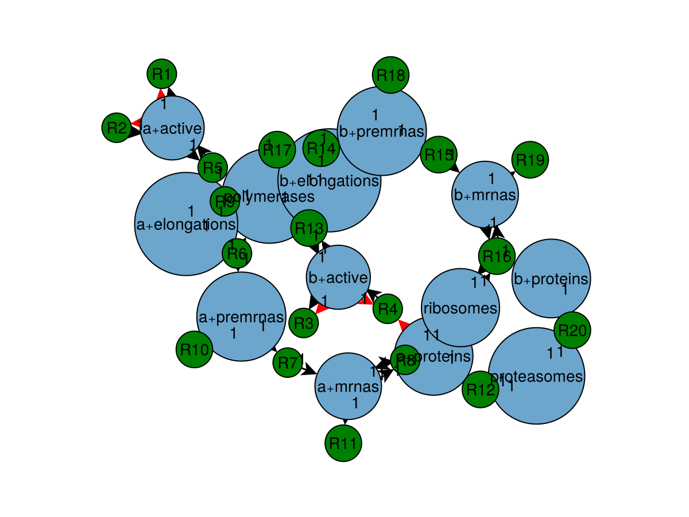
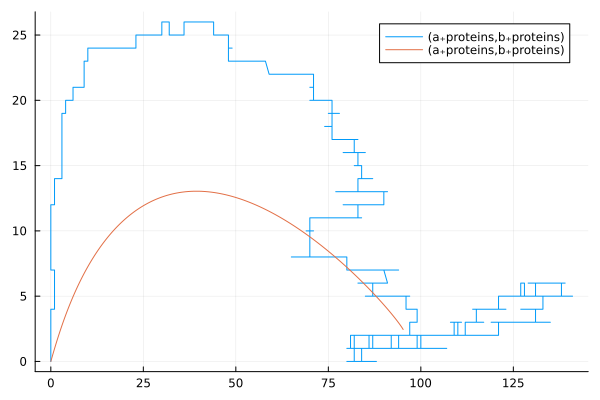

Usage as a library
Everything the CLI tools do can be replicated manually using the library interface, that is, using GeneRegulatorySystems from a Julia session or program. This includes the construction of the actual (Catalyst.jl-based) regulation models that are simulated as part of an experiment Schedule.
The following describes how to obtain these models so that they can be studied in isolation using tools from the SciML ecosystem. In principle, they could then also be used in larger constructions such as inference procedures.
Setup
The package can simply be installed using Julia's package manager. Since it is not published to the General registry yet, you need to reference the package repository directly. For example, type
]add https://github.com/drostlab/GeneRegulatorySystems.jlin the Julia REPL after activating your work environment, like a toy environment (]activate --temp). You can then run the examples on this page.
Definition of new model templates
The CLI tools do not support an explicit extension mechanism, so if you indend to define new model templates and actually make them available as part of the scheduling language, you need to modify the the Git repository (and ideally contribute any new models upstream eventually).
If you have installed the CLI tools by cloning the Git repository, it may make sense to ]develop that path directly. For example, in a Julia REPL after activating your work environment, type
]develop ~/src/grswhere you replace ~/src/grs by the repository location. Changes to that repository then affect both the CLI tools and the work environment.
Pluto.jl
If you intend to work on a Pluto.jl notebook, because its built-in package manager only allows registered packages, you need to use a "Pkg cell". For example, you can define a cell
begin
import Pkg
Pkg.activate(mktempdir())
Pkg.add(url = "https://github.com/drostlab/GeneRegulatorySystems.jl")
using GeneRegulatorySystems
# maybe add other packages here...
endto add and load this package.
Like above, if you want to operate on a locally checked out repository (e.g. because you need access to new model templates that you have registered for the CLI tools), you can ]develop that repository. For example, you can define a cell
begin
import Pkg
Pkg.activate(mktempdir())
Pkg.develop(path = joinpath(ENV["HOME"], "src", "grs"))
using GeneRegulatorySystems
end(where you may need to change the path definition if you installed the package somewhere else). However, you may need to restart the notebook after making changes to the repository.
Constructing models
using GeneRegulatorySystemsThe lowest-level way to construct a regulation model f! is to call a model constructor with a corresponding definition. For example,
base_rates = Models.V1.EukaryoteBaseRates(
activation = 2.5,
deactivation = 10.0,
trigger = 6.6e-7,
transcription = 0.001,
processing = 0.02,
translation = 2.5e-9,
abortion = 0.01,
premrna_decay = 0.001,
mrna_decay = 0.001,
protein_decay = 3.0e-10,
)
definition = Models.V1.Definition(genes = [
Models.V1.Gene(name = :a; base_rates)
Models.V1.Gene(
name = :b,
repression = Models.V1.Repression(slots = [
Models.V1.HillRegulator(from = :a, at = 2.0)
]);
base_rates,
)
])
f! = Models.V1.build(definition)builds a simple 2-gene network where one gene represses the other. This same model can also be constructed from a JSON specification, either in its JSON.parsed form
base_rates = Dict(
:activation => 2.5,
:deactivation => 10.0,
:trigger => 6.6e-7,
:transcription => 0.001,
:processing => 0.02,
:translation => 2.5e-9,
:abortion => 0.01,
:premrna_decay => 0.001,
:mrna_decay => 0.001,
:protein_decay => 3.0e-10,
)
specification = Dict(:genes => [
Dict(:name => "a", :base_rates => base_rates)
Dict(
:name => "b",
:base_rates => base_rates,
:repression => [Dict(:from => "a", :at => 2.0)],
)
])
f! = Models.V1.build(specification)or directly from raw JSON:
import JSON
base_rates_json = """
{
"activation": 2.5,
"deactivation": 10.0,
"trigger": 6.6e-7,
"transcription": 0.001,
"processing": 0.02,
"translation": 2.5e-9,
"abortion": 0.01,
"premrna_decay": 0.001,
"mrna_decay": 0.001,
"protein_decay": 3e-10
}
"""
specification_json = """
{"genes": [
{"name": "a", "base_rates": $base_rates_json},
{
"name": "b",
"base_rates": $base_rates_json,
"repression": [{"from": "a", "at": 2.0}]
}
]}
"""
specification = JSON.parse(specification_json, dicttype = Dict{Symbol, Any})
f! = Models.V1.build(specification)Note that the JSON must be parsed with dicttype = Dict{Symbol, Any} and likewise any Dict/Array-specification as shown above must use Dict{Symbol, Any} for every Dict. Finally, a Model can be constructed via Models.parse (or loaded from a model specification file using Models.load)
f! = Models.parse("""
{"{regulation/v1}": $specification_json}
""")which means that the JSON specification is interpreted as a literal of the scheduling language. All of the above examples produce the same regulation model. The result f! is a Wrapped model that contains a model::Model tagged with an arbitrary definition object:
typeof(f!)GeneRegulatorySystems.Models.Wrapped{GeneRegulatorySystems.Models.SciML.JumpState}In this case, the model is twice-wrapped, where the outer definition
f!.definitionGeneRegulatorySystems.Models.V1.Definition(:polymerases, :ribosomes, :proteasomes, GeneRegulatorySystems.Models.V1.Gene[GeneRegulatorySystems.Models.V1.Gene{GeneRegulatorySystems.Models.V1.EukaryoteBaseRates}(:a, GeneRegulatorySystems.Models.V1.EukaryoteBaseRates(2.5, 10.0, 6.6e-7, 0.001, 0.02, 2.5e-9, 0.01, 0.001, 0.001, 3.0e-10), true, GeneRegulatorySystems.Models.V1.Activation(GeneRegulatorySystems.Models.V1.HillRegulator[], minimum), GeneRegulatorySystems.Models.V1.Repression(GeneRegulatorySystems.Models.V1.HillRegulator[], minimum), GeneRegulatorySystems.Models.V1.Proteolysis(GeneRegulatorySystems.Models.V1.DirectRegulator[])), GeneRegulatorySystems.Models.V1.Gene{GeneRegulatorySystems.Models.V1.EukaryoteBaseRates}(:b, GeneRegulatorySystems.Models.V1.EukaryoteBaseRates(2.5, 10.0, 6.6e-7, 0.001, 0.02, 2.5e-9, 0.01, 0.001, 0.001, 3.0e-10), true, GeneRegulatorySystems.Models.V1.Activation(GeneRegulatorySystems.Models.V1.HillRegulator[], minimum), GeneRegulatorySystems.Models.V1.Repression(GeneRegulatorySystems.Models.V1.HillRegulator[GeneRegulatorySystems.Models.V1.HillRegulator(:a, 2.0, -1.0)], minimum), GeneRegulatorySystems.Models.V1.Proteolysis(GeneRegulatorySystems.Models.V1.DirectRegulator[]))], GeneRegulatorySystems.Models.Reaction[])is the V1.Definition defining the model and the inner definition
f!.model.definition\[ \begin{align*} \mathrm{\mathtt{a.active}} &\xrightleftharpoons[2.5 \left( 1 - \mathtt{a.active} \right)]{10.0 \mathtt{a.active}} \varnothing \\ \mathrm{\mathtt{b.active}} &\xrightleftharpoons[\frac{2.5 \left( 1 - \mathtt{b.active} \right)}{1.0 + 0.5 \mathtt{a.proteins}}]{10.0 \mathtt{b.active}} \varnothing \\ \mathrm{\mathtt{a.active}} + \mathrm{\mathtt{polymerases}} &\xrightarrow{\mathtt{a.trigger}} \mathrm{\mathtt{a.active}} + \mathrm{\mathtt{a.elongations}} \\ \mathrm{\mathtt{a.elongations}} &\xrightarrow{\mathtt{a.transcription}} \mathrm{\mathtt{a.premrnas}} + \mathrm{\mathtt{polymerases}} \\ \mathrm{\mathtt{a.premrnas}} &\xrightarrow{\mathtt{a.processing}} \mathrm{\mathtt{a.mrnas}} \\ \mathrm{\mathtt{a.mrnas}} + \mathrm{\mathtt{ribosomes}} &\xrightarrow{\mathtt{a.translation}} \mathrm{\mathtt{a.mrnas}} + \mathrm{\mathtt{a.proteins}} + \mathrm{\mathtt{ribosomes}} \\ \mathrm{\mathtt{a.elongations}} &\xrightarrow{\mathtt{a.abortion}} \mathrm{\mathtt{polymerases}} \\ \mathrm{\mathtt{a.premrnas}} &\xrightarrow{\mathtt{a.premrna_{decay}}} \varnothing \\ \mathrm{\mathtt{a.mrnas}} &\xrightarrow{\mathtt{a.mrna_{decay}}} \varnothing \\ \mathrm{\mathtt{a.proteins}} + \mathrm{\mathtt{proteasomes}} &\xrightarrow{\mathtt{a.protein_{decay}}} \mathrm{\mathtt{proteasomes}} \\ \mathrm{\mathtt{b.active}} + \mathrm{\mathtt{polymerases}} &\xrightarrow{\mathtt{b.trigger}} \mathrm{\mathtt{b.active}} + \mathrm{\mathtt{b.elongations}} \\ \mathrm{\mathtt{b.elongations}} &\xrightarrow{\mathtt{b.transcription}} \mathrm{\mathtt{b.premrnas}} + \mathrm{\mathtt{polymerases}} \\ \mathrm{\mathtt{b.premrnas}} &\xrightarrow{\mathtt{b.processing}} \mathrm{\mathtt{b.mrnas}} \\ \mathrm{\mathtt{b.mrnas}} + \mathrm{\mathtt{ribosomes}} &\xrightarrow{\mathtt{b.translation}} \mathrm{\mathtt{b.mrnas}} + \mathrm{\mathtt{b.proteins}} + \mathrm{\mathtt{ribosomes}} \\ \mathrm{\mathtt{b.elongations}} &\xrightarrow{\mathtt{b.abortion}} \mathrm{\mathtt{polymerases}} \\ \mathrm{\mathtt{b.premrnas}} &\xrightarrow{\mathtt{b.premrna_{decay}}} \varnothing \\ \mathrm{\mathtt{b.mrnas}} &\xrightarrow{\mathtt{b.mrna_{decay}}} \varnothing \\ \mathrm{\mathtt{b.proteins}} + \mathrm{\mathtt{proteasomes}} &\xrightarrow{\mathtt{b.protein_{decay}}} \mathrm{\mathtt{proteasomes}} \end{align*} \]
is the Catalyst.ReactionSystem intermediate representation. The inner model
typeof(f!.model.model)GeneRegulatorySystems.Models.SciML.JumpModelis the actual JumpModel containing the prepared system (a ModelingToolkit.JumpSystem), method (a JumpProcesses.AbstractAggregatorAlgorithm) and parameters.
See Instantiating models and Regulation for information on how to construct other regulation models.
Simulating models
Models can be simulated either using The Model interface, or directly via the contained SciML objects. The former is what the Scheduling machinery and CLI tools use, while the latter is probably what you want if you are using this package from Julia. We will quickly start with the Model interface anyway for rough overview of what the experiment tool does internally.
Using the Model interface
The reason this interface exists in the first place is because the package and its first-iteration base regulation model were originally not written in terms of Catalyst.jl/SciML. Scheduling and, by extension, the experiment runner, can stitch together heterogeneous model types (besides SciML-based regulation models) along the time dimension. Another design goal was reproducibility and pervasive seed control in the presence of arbitrary intervention schedules and trajectory branching.
Even though all regulation is currently implemented exclusively using Catalyst.jl and JumpProcesses.jl, and interventions could probably now be implemented in that way as well, the current scheduling subsystem is by now quite flexible and not all of its constructs map one-to-one to equivalents in SciML-land in a straightforward way. Further, SciML is quite the moving target and some isolation seemed helpful.
However, in some situations this flexibility comes at the cost of performance, and duplicating complexity is always annoying, and further ModelingToolkit.jl seems to become more stable and complete, so I may still move the scheduling system closer to SciML eventually. In the meantime, as it is currently structured it still has lots of potential for optimization if performance becomes an issue in specific instances.
To simulate a trajectory, you need to first construct an initial state and then invoke the model f! as described in Models:
# Initial state for V1 regulation requires some molecular species present;
# defaults are:
# Dict(:polymerases => 5*10^5, :ribosomes => 2*10^6, :proteasomes => 10^6)
x = Models.FlatState(counts = Models.load_defaults()[:bootstrap])
# f! contains a JumpModel, which requires a JumpState; convert it:
x = Models.adapt!(x, f!)
x = f!(x, 100.0) # step 100 time units
Models.FlatState(x) # show as FlatStateGeneRegulatorySystems.Models.FlatState(100.0, Dict(Symbol("b.premrnas") => 0, Symbol("a.proteins") => 0, Symbol("a.mrnas") => 0, Symbol("a.active") => 0, :polymerases => 499993, Symbol("a.elongations") => 2, Symbol("b.mrnas") => 0, :proteasomes => 1000000, Symbol("b.proteins") => 0, Symbol("b.elongations") => 5…), Random.Xoshiro(0x4a19d6d88c9037b6, 0xeb414cc3934a942d, 0x03db59e0a8491dd9, 0xd7667567574c8fb6, 0x619add5c6a2ec5e5))This will however not record the trajectories but only keep the final counts. The JumpState holds the SciML x.integrator and thus its solution object x.integrator.sol, but it will only contain values for the final timepoint:
x.integrator.solretcode: Default
Interpolation: Piecewise constant interpolation
t: 1-element Vector{Float64}:
100.0
u: 1-element Vector{Vector{Int64}}:
[0, 0, 0, 499993, 2000000, 1000000, 2, 0, 0, 5, 0, 0, 0]To retain intermediate jump events, the model can be invoked with the record keyword argument:
x = f!(x, 1.0, record = true)
x.integrator.solretcode: Default
Interpolation: Piecewise constant interpolation
t: 6-element Vector{Float64}:
100.0
100.16951231824979
100.18144154975192
100.88211763575994
100.92434544369601
101.0
u: 6-element Vector{Vector{Int64}}:
[0, 0, 0, 499993, 2000000, 1000000, 2, 0, 0, 5, 0, 0, 0]
[0, 1, 0, 499993, 2000000, 1000000, 2, 0, 0, 5, 0, 0, 0]
[0, 0, 0, 499993, 2000000, 1000000, 2, 0, 0, 5, 0, 0, 0]
[1, 0, 0, 499993, 2000000, 1000000, 2, 0, 0, 5, 0, 0, 0]
[0, 0, 0, 499993, 2000000, 1000000, 2, 0, 0, 5, 0, 0, 0]
[0, 0, 0, 499993, 2000000, 1000000, 2, 0, 0, 5, 0, 0, 0]The contained integrator will then contain the trajectory segment for this invocation, (unfortunately) in a dense format. The experiment tool accesses this segment via Models.each_event, which calls back for each initial value and then for each jump event:
Models.each_event(x) do t, name, value
@show (; t, name, value)
end(; t, name, value) = (t = 100.0, name = Symbol("a.active"), value = 0)
(; t, name, value) = (t = 100.0, name = Symbol("b.active"), value = 0)
(; t, name, value) = (t = 100.0, name = Symbol("a.proteins"), value = 0)
(; t, name, value) = (t = 100.0, name = :polymerases, value = 499993)
(; t, name, value) = (t = 100.0, name = :ribosomes, value = 2000000)
(; t, name, value) = (t = 100.0, name = :proteasomes, value = 1000000)
(; t, name, value) = (t = 100.0, name = Symbol("a.elongations"), value = 2)
(; t, name, value) = (t = 100.0, name = Symbol("a.premrnas"), value = 0)
(; t, name, value) = (t = 100.0, name = Symbol("a.mrnas"), value = 0)
(; t, name, value) = (t = 100.0, name = Symbol("b.elongations"), value = 5)
(; t, name, value) = (t = 100.0, name = Symbol("b.premrnas"), value = 0)
(; t, name, value) = (t = 100.0, name = Symbol("b.mrnas"), value = 0)
(; t, name, value) = (t = 100.0, name = Symbol("b.proteins"), value = 0)
(; t, name, value) = (t = 100.16951231824979, name = Symbol("b.active"), value = 1)
(; t, name, value) = (t = 100.18144154975192, name = Symbol("b.active"), value = 0)
(; t, name, value) = (t = 100.88211763575994, name = Symbol("a.active"), value = 1)
(; t, name, value) = (t = 100.92434544369601, name = Symbol("a.active"), value = 0)Between saving nothing and everything, other saving options from SciML are not supported here; they are all emulated via the Scheduling system. For example, to record the state only at a single time slice, we can advance to that timepoint without recording and then record without advancing:
x = f!(x, 99.0)
x = f!(x, 0.0, record = true)
x.integrator.solretcode: Default
Interpolation: Piecewise constant interpolation
t: 1-element Vector{Float64}:
200.0
u: 1-element Vector{Vector{Int64}}:
[0, 0, 0, 499987, 2000000, 1000000, 6, 0, 0, 7, 0, 0, 0]Note that each invocation of the JumpModel f! will initially clear the previously recorded trajectory segment, which therefore needs to be extracted immediately.
Using SciML directly
As previously noted, the actual regulation JumpModel is defined by a method applied to a system along with a set of parameters. These can be used directly to sample trajectories using the standard JumpProcesses.jl interface:
using JumpProcesses
using ModelingToolkit
using Plots
(; system, method, parameters) = f!.model.model
bootstrap = Models.load_defaults()[:bootstrap]
normalize_name = GeneRegulatorySystems.Models.SciML.normalize_name
u₀ = [
s => Int(get(bootstrap, normalize_name(s), 0))
for s in unknowns(system)
]
discrete_problem = DiscreteProblem(system, u₀, (0.0, 3e4), parameters)
rng = GeneRegulatorySystems.randomness("")
problem = JumpProblem(system, discrete_problem, method; rng)
solution = solve(problem, SSAStepper())
plot(solution, idxs = (:a₊proteins, :b₊proteins))
But since intermediate definitions are retained as described above, we also have access to the ReactionSystem and can thus use it with the tools Catalyst.jl provides. For example:
using CairoMakie
using Catalyst
using GraphMakie
using NetworkLayout
reaction_system = f!.model.definition
plot_network(reaction_system)
conservationlaw_constants(flatten(reaction_system))\[ \begin{align} \Gamma_{1} &= \mathtt{proteasomes}\left( t \right) \\ \Gamma_{2} &= \mathtt{ribosomes}\left( t \right) \\ \Gamma_{3} &= \mathtt{b.elongations}\left( t \right) + \mathtt{a.elongations}\left( t \right) + \mathtt{polymerases}\left( t \right) \end{align} \]
This allows us to easily construct an ODE approximation of the jump process dynamics
using OrdinaryDiffEqTsit5
approximation = convert(ODESystem, reaction_system)\[ \begin{align} \frac{\mathrm{d} \mathtt{a.active}\left( t \right)}{\mathrm{d}t} &= - 10 \mathtt{a.active}\left( t \right) + 2.5 \left( 1 - \mathtt{a.active}\left( t \right) \right) \\ \frac{\mathrm{d} \mathtt{b.active}\left( t \right)}{\mathrm{d}t} &= - 10 \mathtt{b.active}\left( t \right) + \frac{2.5 \left( 1 - \mathtt{b.active}\left( t \right) \right)}{1 + \frac{\mathtt{a.proteins}\left( t \right)}{2}} \\ \frac{\mathrm{d} \mathtt{a.proteins}\left( t \right)}{\mathrm{d}t} &= - \mathtt{a.protein\_decay} \mathtt{a.proteins}\left( t \right) \mathtt{proteasomes}\left( t \right) + \mathtt{a.translation} \mathtt{a.mrnas}\left( t \right) \mathtt{ribosomes}\left( t \right) \\ \frac{\mathrm{d} \mathtt{polymerases}\left( t \right)}{\mathrm{d}t} &= \mathtt{a.abortion} \mathtt{a.elongations}\left( t \right) + \mathtt{a.transcription} \mathtt{a.elongations}\left( t \right) + \mathtt{b.abortion} \mathtt{b.elongations}\left( t \right) + \mathtt{b.transcription} \mathtt{b.elongations}\left( t \right) - \mathtt{a.trigger} \mathtt{a.active}\left( t \right) \mathtt{polymerases}\left( t \right) - \mathtt{b.trigger} \mathtt{b.active}\left( t \right) \mathtt{polymerases}\left( t \right) \\ \frac{\mathrm{d} \mathtt{ribosomes}\left( t \right)}{\mathrm{d}t} &= 0 \\ \frac{\mathrm{d} \mathtt{proteasomes}\left( t \right)}{\mathrm{d}t} &= 0 \\ \frac{\mathrm{d} \mathtt{a.elongations}\left( t \right)}{\mathrm{d}t} &= - \mathtt{a.abortion} \mathtt{a.elongations}\left( t \right) - \mathtt{a.transcription} \mathtt{a.elongations}\left( t \right) + \mathtt{a.trigger} \mathtt{a.active}\left( t \right) \mathtt{polymerases}\left( t \right) \\ \frac{\mathrm{d} \mathtt{a.premrnas}\left( t \right)}{\mathrm{d}t} &= - \mathtt{a.premrna\_decay} \mathtt{a.premrnas}\left( t \right) - \mathtt{a.processing} \mathtt{a.premrnas}\left( t \right) + \mathtt{a.transcription} \mathtt{a.elongations}\left( t \right) \\ \frac{\mathrm{d} \mathtt{a.mrnas}\left( t \right)}{\mathrm{d}t} &= - \mathtt{a.mrna\_decay} \mathtt{a.mrnas}\left( t \right) + \mathtt{a.processing} \mathtt{a.premrnas}\left( t \right) \\ \frac{\mathrm{d} \mathtt{b.elongations}\left( t \right)}{\mathrm{d}t} &= - \mathtt{b.abortion} \mathtt{b.elongations}\left( t \right) - \mathtt{b.transcription} \mathtt{b.elongations}\left( t \right) + \mathtt{b.trigger} \mathtt{b.active}\left( t \right) \mathtt{polymerases}\left( t \right) \\ \frac{\mathrm{d} \mathtt{b.premrnas}\left( t \right)}{\mathrm{d}t} &= - \mathtt{b.premrna\_decay} \mathtt{b.premrnas}\left( t \right) - \mathtt{b.processing} \mathtt{b.premrnas}\left( t \right) + \mathtt{b.transcription} \mathtt{b.elongations}\left( t \right) \\ \frac{\mathrm{d} \mathtt{b.mrnas}\left( t \right)}{\mathrm{d}t} &= - \mathtt{b.mrna\_decay} \mathtt{b.mrnas}\left( t \right) + \mathtt{b.processing} \mathtt{b.premrnas}\left( t \right) \\ \frac{\mathrm{d} \mathtt{b.proteins}\left( t \right)}{\mathrm{d}t} &= - \mathtt{b.protein\_decay} \mathtt{b.proteins}\left( t \right) \mathtt{proteasomes}\left( t \right) + \mathtt{b.translation} \mathtt{b.mrnas}\left( t \right) \mathtt{ribosomes}\left( t \right) \end{align} \]
and simulate from it:
u₀′ = map(x -> x.first => float(x.second), u₀)
problem = ODEProblem(complete(approximation), u₀′, (0.0, 3e4), parameters)
solution = solve(problem, Tsit5())
Plots.plot!(solution, idxs = (:a₊proteins, :b₊proteins))
Reifying Models from Schedules
The regulation JumpModels that a Schedule constructs during its execution can be plucked out and used in isolation. A Schedule can be loaded from its JSON specification using the Models.load function:
source = "../../../examples/toy/repressilator.schedule.json"
schedule! = Models.load(source, seed = "(ignored)")Schedule{GeneRegulatorySystems.Specifications.Scope}(GeneRegulatorySystems.Specifications.Scope(Dict{Symbol, Specification}(:label => GeneRegulatorySystems.Specifications.Template("repressilator-plain", identity, Set{Symbol}())), GeneRegulatorySystems.Specifications.Scope(Dict{Symbol, Specification}(:do => GeneRegulatorySystems.Specifications.Template(Dict{Symbol, Any}(:genes => Any[Dict{Symbol, Any}(:activation => Any[Dict{Symbol, Any}(:from => 1, :at => 2.0)], :repression => Any[Dict{Symbol, Any}(:from => 3, :at => 4.0)], :$ => Any["defaults", "gene"]), Dict{Symbol, Any}(:activation => Any[Dict{Symbol, Any}(:from => 2, :at => 2.0)], :repression => Any[Dict{Symbol, Any}(:from => 1, :at => 4.0)], :$ => Any["defaults", "gene"]), Dict{Symbol, Any}(:activation => Any[Dict{Symbol, Any}(:from => 3, :at => 2.0)], :repression => Any[Dict{Symbol, Any}(:from => 2, :at => 4.0)], :$ => Any["defaults", "gene"])]), GeneRegulatorySystems.Models.V1.build, Set([:defaults]))), GeneRegulatorySystems.Specifications.List(Specification[GeneRegulatorySystems.Specifications.Template("\${seed}-rep", GeneRegulatorySystems.Models.Plumbing.Seed, Set([:seed])), GeneRegulatorySystems.Specifications.Template(Dict{Symbol, Any}(Symbol("1.proteins") => 100, :$ => Any["defaults", "bootstrap"]), GeneRegulatorySystems.Models.Plumbing.adder, Set([:defaults])), GeneRegulatorySystems.Specifications.Scope(Dict{Symbol, Specification}(:to => GeneRegulatorySystems.Specifications.Template(455000.0, identity, Set{Symbol}())), GeneRegulatorySystems.Specifications.Slice(), false, false, Set{Symbol}()), GeneRegulatorySystems.Specifications.Scope(Dict{Symbol, Specification}(), GeneRegulatorySystems.Specifications.Each(GeneRegulatorySystems.Specifications.Template(Base.OneTo(5), identity, Set{Symbol}()), :i, GeneRegulatorySystems.Specifications.List(Specification[GeneRegulatorySystems.Specifications.Template("\${seed}-repress-\${i}", GeneRegulatorySystems.Models.Plumbing.Seed, Set([:i, :seed])), GeneRegulatorySystems.Specifications.Scope(Dict{Symbol, Specification}(:to => GeneRegulatorySystems.Specifications.Template(455000.0, identity, Set{Symbol}())), GeneRegulatorySystems.Specifications.Slice(), false, false, Set{Symbol}())], Set([:i, :seed])), Set([:seed])), false, true, Set([:seed]))], Set([:seed, :defaults])), false, false, Set([:defaults, :seed])), false, false, Set([:defaults, :seed])), Dict{Symbol, Any}(:into => "", :channel => "", :defaults => Dict{Symbol, Any}(:gene => Dict{Symbol, Any}(:base_rates => Dict{Symbol, Any}(:activation => 2.5, :processing => 0.02, :transcription => 0.001, :protein_decay => 3.0e-10, :trigger => 6.6e-7, :mrna_decay => 0.001, :deactivation => 10.0, :translation => 2.5e-9, :abortion => 0.01, :premrna_decay => 0.001…)), :differentiation => Dict{Symbol, Any}(:timer_deposit => Dict{Symbol, Any}(:mrnas => 5, :proteins => 30), :buffer_deposit => 500, :differentiator => Dict{Symbol, Any}(:base_rates => Dict{Symbol, Any}(:activation => 2.5, :processing => 0.02, :transcription => 0.015, :protein_decay => 2.0e-10, :trigger => 6.6e-7, :mrna_decay => 0.0075, :deactivation => 10.0, :translation => 2.5e-9, :abortion => 0.01, :premrna_decay => 0.001…)), :timer => Dict{Symbol, Any}(:base_rates => Dict{Symbol, Any}(:activation => 0.1, :processing => 0.02, :transcription => 2.5e7, :protein_decay => 1.0, :trigger => 6.6e-7, :mrna_decay => 0.01, :deactivation => 0.1, :translation => 1.0e-9, :abortion => 0.01, :premrna_decay => 0.001…)), :buffer => Any[0.002, 0.008]), :bootstrap => Dict{Symbol, Any}(:polymerases => 500000.0, :proteasomes => 1.0e6, :ribosomes => 2.0e6)), :seed => "(ignored)"), false, "")In principle, Models.load can load regulation model specifications directly as shown above, but since the specification is interpreted as an expression of the scheduling language, it may contain references that need to be substituted in to make it a complete model specification. The referenced values need to be provided as bindings to Models.load so that it can create a closed Schedule. The schedule specification loaded in the preceding example
read(source, String) |> print{
"label": "repressilator-plain",
"step": {
"do": {"{regulation/v1}": {
"genes": [
{
"$": ["defaults", "gene"],
"activation": [{"from": 1, "at": 2.0}],
"repression": [{"from": 3, "at": 4.0}]
},
{
"$": ["defaults", "gene"],
"activation": [{"from": 2, "at": 2.0}],
"repression": [{"from": 1, "at": 4.0}]
},
{
"$": ["defaults", "gene"],
"activation": [{"from": 3, "at": 2.0}],
"repression": [{"from": 2, "at": 4.0}]
}
]
}},
"step": [
{"{seed}": "${seed}-rep"},
{"{add}": {
"$": ["defaults", "bootstrap"],
"1.proteins": 100
}},
{"to": 455000.0},
{
"branch": true,
"each": {"length": 5},
"as": "i",
"step": [
{"{seed}": "${seed}-repress-${i}"},
{"to": 455000.0}
]
}
]
}
}refers to the seed, which is why it needs to be provided as a keyword argument, even though we will not actually use it in the following.
The actual regulation model can now be reified from its path within the schedule:
repressilator! = Scheduling.reify(schedule!, "+.do")
reaction_system = repressilator!.model.model.definition\[ \begin{align*} \mathrm{\mathtt{1.active}} &\xrightleftharpoons[\frac{2.5 \left( 1 - \mathtt{1.active} \right)}{1.0 + 0.25 \mathtt{3.proteins}}]{\frac{10.0 \mathtt{1.active}}{1.0 + 0.5 \mathtt{1.proteins}}} \varnothing \\ \mathrm{\mathtt{2.active}} &\xrightleftharpoons[\frac{2.5 \left( 1 - \mathtt{2.active} \right)}{1.0 + 0.25 \mathtt{1.proteins}}]{\frac{10.0 \mathtt{2.active}}{1.0 + 0.5 \mathtt{2.proteins}}} \varnothing \\ \mathrm{\mathtt{3.active}} &\xrightleftharpoons[\frac{2.5 \left( 1 - \mathtt{3.active} \right)}{1.0 + 0.25 \mathtt{2.proteins}}]{\frac{10.0 \mathtt{3.active}}{1.0 + 0.5 \mathtt{3.proteins}}} \varnothing \\ \mathrm{\mathtt{1.active}} + \mathrm{\mathtt{polymerases}} &\xrightarrow{\mathtt{1.trigger}} \mathrm{\mathtt{1.active}} + \mathrm{\mathtt{1.elongations}} \\ \mathrm{\mathtt{1.elongations}} &\xrightarrow{\mathtt{1.transcription}} \mathrm{\mathtt{1.premrnas}} + \mathrm{\mathtt{polymerases}} \\ \mathrm{\mathtt{1.premrnas}} &\xrightarrow{\mathtt{1.processing}} \mathrm{\mathtt{1.mrnas}} \\ \mathrm{\mathtt{1.mrnas}} + \mathrm{\mathtt{ribosomes}} &\xrightarrow{\mathtt{1.translation}} \mathrm{\mathtt{1.mrnas}} + \mathrm{\mathtt{1.proteins}} + \mathrm{\mathtt{ribosomes}} \\ \mathrm{\mathtt{1.elongations}} &\xrightarrow{\mathtt{1.abortion}} \mathrm{\mathtt{polymerases}} \\ \mathrm{\mathtt{1.premrnas}} &\xrightarrow{\mathtt{1.premrna_{decay}}} \varnothing \\ \mathrm{\mathtt{1.mrnas}} &\xrightarrow{\mathtt{1.mrna_{decay}}} \varnothing \\ \mathrm{\mathtt{1.proteins}} + \mathrm{\mathtt{proteasomes}} &\xrightarrow{\mathtt{1.protein_{decay}}} \mathrm{\mathtt{proteasomes}} \\ \mathrm{\mathtt{2.active}} + \mathrm{\mathtt{polymerases}} &\xrightarrow{\mathtt{2.trigger}} \mathrm{\mathtt{2.active}} + \mathrm{\mathtt{2.elongations}} \\ \mathrm{\mathtt{2.elongations}} &\xrightarrow{\mathtt{2.transcription}} \mathrm{\mathtt{2.premrnas}} + \mathrm{\mathtt{polymerases}} \\ \mathrm{\mathtt{2.premrnas}} &\xrightarrow{\mathtt{2.processing}} \mathrm{\mathtt{2.mrnas}} \\ \mathrm{\mathtt{2.mrnas}} + \mathrm{\mathtt{ribosomes}} &\xrightarrow{\mathtt{2.translation}} \mathrm{\mathtt{2.mrnas}} + \mathrm{\mathtt{2.proteins}} + \mathrm{\mathtt{ribosomes}} \\ \mathrm{\mathtt{2.elongations}} &\xrightarrow{\mathtt{2.abortion}} \mathrm{\mathtt{polymerases}} \\ \mathrm{\mathtt{2.premrnas}} &\xrightarrow{\mathtt{2.premrna_{decay}}} \varnothing \\ \mathrm{\mathtt{2.mrnas}} &\xrightarrow{\mathtt{2.mrna_{decay}}} \varnothing \\ \mathrm{\mathtt{2.proteins}} + \mathrm{\mathtt{proteasomes}} &\xrightarrow{\mathtt{2.protein_{decay}}} \mathrm{\mathtt{proteasomes}} \\ \mathrm{\mathtt{3.active}} + \mathrm{\mathtt{polymerases}} &\xrightarrow{\mathtt{3.trigger}} \mathrm{\mathtt{3.active}} + \mathrm{\mathtt{3.elongations}} \\ \mathrm{\mathtt{3.elongations}} &\xrightarrow{\mathtt{3.transcription}} \mathrm{\mathtt{3.premrnas}} + \mathrm{\mathtt{polymerases}} \\ \mathrm{\mathtt{3.premrnas}} &\xrightarrow{\mathtt{3.processing}} \mathrm{\mathtt{3.mrnas}} \\ \mathrm{\mathtt{3.mrnas}} + \mathrm{\mathtt{ribosomes}} &\xrightarrow{\mathtt{3.translation}} \mathrm{\mathtt{3.mrnas}} + \mathrm{\mathtt{3.proteins}} + \mathrm{\mathtt{ribosomes}} \\ \mathrm{\mathtt{3.elongations}} &\xrightarrow{\mathtt{3.abortion}} \mathrm{\mathtt{polymerases}} \\ \mathrm{\mathtt{3.premrnas}} &\xrightarrow{\mathtt{3.premrna_{decay}}} \varnothing \\ \mathrm{\mathtt{3.mrnas}} &\xrightarrow{\mathtt{3.mrna_{decay}}} \varnothing \\ \mathrm{\mathtt{3.proteins}} + \mathrm{\mathtt{proteasomes}} &\xrightarrow{\mathtt{3.protein_{decay}}} \mathrm{\mathtt{proteasomes}} \end{align*} \]
The specification path refers to a named binding :do defined within a sub-schedule (in this case, the one nested inside the top-level Scope/{}); reification will first create that nested Schedule, evaluating the definition in the process, and then look up the resulting binding by name. For more on this, see Paths and reification.
Compared to the directly constructed models from above, it is wrapped once more, now additionally recording its definition location within schedule!:
repressilator!.definitionGeneRegulatorySystems.Models.Scheduling.Locator("+.do")And just like above, we can now use the contained JumpModel, for example to manually run simulations:
(; system, method, parameters) = repressilator!.model.model.model
start = merge(bootstrap, Dict(Symbol("1.proteins") => 100))
u₀ = [
s => Int(get(start, normalize_name(s), 0))
for s in unknowns(system)
]
discrete_problem = DiscreteProblem(system, u₀, (0.0, 1e5), parameters)
rng = GeneRegulatorySystems.randomness("seed")
problem = JumpProblem(system, discrete_problem, method; rng)
solution = solve(problem, SSAStepper())
Plots.plot(
solution,
idxs = (Symbol("1₊proteins"), Symbol("2₊proteins"), Symbol("3₊proteins")),
camera = (60, 60),
)
u₀′ = map(x -> x.first => float(x.second), u₀)
problem = ODEProblem(reaction_system, u₀′, (0.0, 1e5), parameters)
solution = solve(problem, Tsit5())
Plots.plot!(
solution,
idxs = (Symbol("1₊proteins"), Symbol("2₊proteins"), Symbol("3₊proteins"))
)